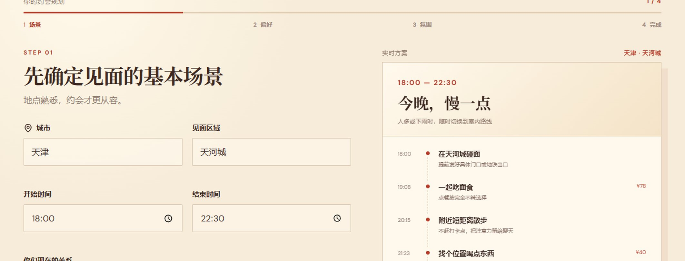
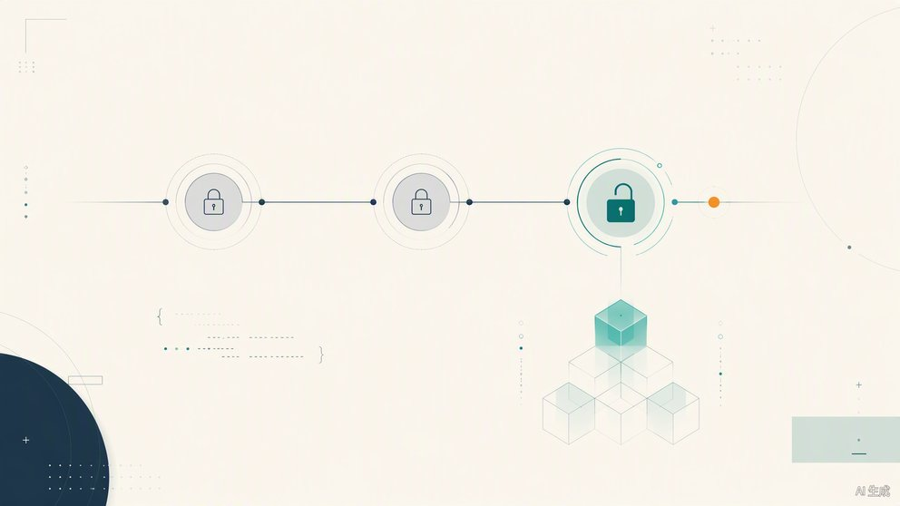
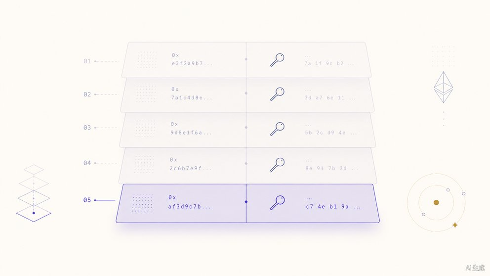

Web · 前端

Date-Lightly
多步骤约会规划应用：输入城市、区域、时间和关系阶段，实时生成完整的时间轴方案、预算估算和可直接发送的邀约文案。
关于我做的事、我相信的事，以及为什么我做的事值得你留意。
我是 Jason Zhang，一名独立开发者与自由职业者，目前常驻天津。我以自由职业方式接受项目合作，专注于从想法到交付的完整链路。
我热爱设计与工程的交界地带——不是简单的还原原型，也不是纯粹的技术堆叠，而是让两者一起生长，让产品在细节上呈现出一致性和品味。
工作之外，我维护自己的开源项目，也在探索可长期运营的独立产品。相信好的软件是被认真对待过的时间。
按时间倒序，从最近的一段开始。
独立完成 Web3 后端与全栈项目 · 代表项目：ChainFund、MonadAuction
半个设计师、半个后端、一个不肯睡觉的前端——擅长救火、写文档、debug，以及在深夜的 console 里跟自己的代码和解。
每一件都是凌晨写完、白天修一版、周末不敢看的产物。挑几件还愿意公开处刑的。

多步骤约会规划应用：输入城市、区域、时间和关系阶段，实时生成完整的时间轴方案、预算估算和可直接发送的邀约文案。

去中心化内容众筹平台：创作者设定里程碑，资金锁在合约中，只有投票、仲裁或时间锁通过才解锁给创作者，用途证明以 IPFS 链接上链可查。

基于 Monad EVM 的密封竞价拍卖。5 轮 Commit-Reveal 让买家先上链价格哈希、后揭露原值，全程链上交易，从根本上消除竞价狙击。
更多作品见 github.com/zjszjs007 ↗
无论是合作机会、技术咨询，还是单纯想聊聊设计与代码，都欢迎给我留言。
欢迎就项目合作、独立开发、技术探讨等话题给我留言；也可以在 GitHub 上直接开 Issue。
github.com/zjszjs007